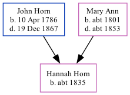

Hannah Horn c1835 -
[ Home ] | [ Calendar ] | [ Surnames Index ] | [ Family History ]The child of John Horn (a laborer) and Mary Ann, Hannah Horn, the three times great-aunt of Nigel Horne, was born in Margate, Kent, England c. 18351.
Throughout her life, she lived at Chapel Hill in Margate on Jun 6, 18412 and on Mar 30, 18513.
Parents
- John was born on Apr 10, 1786
- Mary Ann was born c. 1801
Citations
- 1851 England Census Online publication - Provo, UT, USA: The Generations Network, Inc., 2005.Original data - Census Returns of England and Wales, 1851. Kew, Surrey, England: The National Archives of the UK (TNA): Public Record Office (PRO), 1851. Data imaged from the National
- 1841 England, Wales & Scotland Census - Findmypast (was age 6 and the daughter of the head of the household)
- 1851 England, Wales & Scotland Census - Findmypast (was age 15 and the daughter of the head of the household)
Family Tree
Generated by Ged2Site. Last updated on Jul 20, 2025